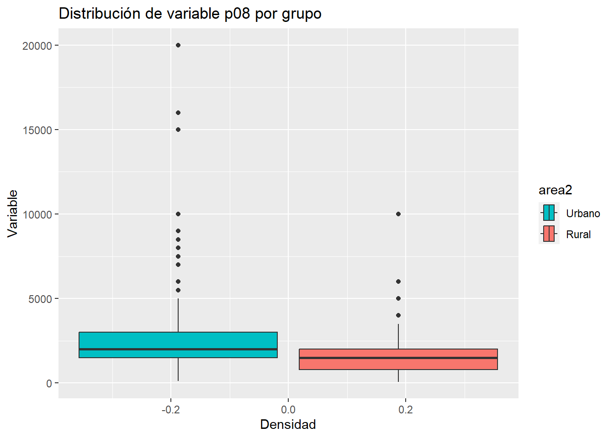

Sesión 6 Prueba de hipótesis: t.test y prop.test
6.1 Prueba de hipótesis
Una prueba de hipótesis es un método para determinar si una afirmación sobre una población es verdadera o falsa, basándose en la información obtenida de una muestra aleatoria de la población. Este enfoque proporciona una forma sistemática y rigurosa para tomar decisiones informadas y hacer inferencias sobre la población en función de la evidencia empírica.
Para aplicar una prueba debemos seguir pasos muy ordenados y entender qué estamos haciendo en cada uno de ellos.

En términos referenciales, es como seguir un proceso de investigación policial! Vamos a utilizar esta analogía!

6.1.1 Paso 1: Establecer hipótesis
En este punto somos como detectives (como Benoit Blanc en Knives Out) y estas son nuestras hipótesis de investigación. Si vamos a investigar un crimen partimos con la H0 que la persona investigada es inocente. Nuestra hipótesis alterna es que es culpable!
Las hipótesis son afirmaciones o suposiciones acerca de una población o de un conjunto de datos que se pretende analizar.
En el contexto de las pruebas de hipótesis, se suelen plantear dos hipótesis: la hipótesis nula (H0) y la hipótesis alternativa (H1).
| Hipótesis | Descripción |
|---|---|
| Hipótesis nula (H0) | La hipótesis nula es una afirmación o suposición inicial que se establece para ser probada. En general, representa la idea de que no hay efecto, cambio o diferencia en el fenómeno o grupo(s) que se está estudiando. Es la hipótesis que se asume como verdadera y que se intenta refutar mediante la prueba de hipótesis. |
| Hipótesis alternativa (H1) | La hipótesis alternativa es lo que un investigador quiere demostrar. Representa la idea de que sí hay un efecto, cambio o diferencia en el fenómeno o grupo(s) que se está estudiando. Es la hipótesis que se acepta si los datos proporcionan suficiente evidencia para rechazar la hipótesis nula. |
Tener en cuenta que la forma cómo planteamos nuestras hipótesis va a repercutir en todo el flujograma.
Normalmente vas a tener que recordar, para cada tipo de prueba que veamos en este curso, cuáles son las hipótesis nula y alterna. Es clave acordarte el orden
6.1.2 Paso 2: Verificar supuestos
Antes de interrogar o investigar al sospechoso, el detective necesita asegurarse de que tiene todas las herramientas y condiciones adecuadas para hacerlo. Esto puede incluir asegurarse de que el interrogatorio se realice en un lugar adecuado o que se sigan ciertos protocolos. Entender previamente estas características nos permitirá investigar mejor! Es nuestra escena del crimen!
Recuerdas que en clases anteriores habíamos hablado sobre los principios que fundamentan la inferencia estadística? Es decir, los principios de la curva normal, desviaciones estándar, errores estándar (en el caso de las distribuciones muestrales), etc…. eso también se aplica aquí!
Partimos de la idea de que si se extraen muchas muestras repetidas (como en la clase anterior), los estadísticos muestrales se centrarán alrededor de un valor con una distribución aproximadamente normal.
En este caso debemos corroborar ciertas características de la distribución de nuestra muestra. Algunas de estas:
DISTRIBUCIÓN NORMAL: Que las variables provengan de una distribución gaussiana o normal.
VARIANZAS IGUALES: Que las varianzas poblacionales sean iguales. Es decir, que la curva de distribución muestral en cada grupo analizado sea homogénea. Si son iguales, el camino de la investigación se dirigirá por un lado, si es diferente irá por otro.
6.1.3 Paso 3: Establecer nivel de significancia
Cuando investigamos un crimen debemos cotejar el comportamiento del investigado frente a una actitud vista como normal o regular. El detective decide cuánta evidencia necesita antes de considerar al sospechoso como culpable. Por ejemplo, puede decidir que necesita al menos un 95% de certeza para considerar al sospechoso culpable.
Como en el caso del intervalo de confianza, elegir el nivel de confianza con el que estamos trabajando es vital.
Técnicamente, el nivel de significancia, denotado generalmente como α (alfa), es un valor umbral que se utiliza para determinar si un p-valor es lo suficientemente pequeño como para rechazar la hipótesis nula.
Dicho en otras palabras, es el riesgo que estamos dispuestos a asumir de hacer una afirmación incorrecta basándonos en nuestra muestra.
Por ejemplo, si se realiza una prueba de hipótesis (cualquier) con un nivel de significancia del 5% (0.05), esto significa que:
Este número va a ser nuestra referencia.
En este caso vamos a considerar una probabilidad máxima del 5% de que los resultados observados se deban al azar.
Si el valor p obtenido en la prueba de hipótesis es menor que el nivel de significancia establecido, se rechaza la hipótesis inicial (nula) y se concluye que hay evidencia suficiente para elegir la hipótesis alternativa.
Es importante destacar que el nivel de significancia elegido puede tener un impacto en la interpretación de los resultados y que, en última instancia, es el investigador quien debe decidir el nivel adecuado en función del contexto de la investigación y del grado de incertidumbre que esté dispuesto a asumir.
6.1.4 Paso 4: Aplicar test estadístico y obtener p-value
Ahora debemos recopilar evidencia! El detective recopila y analiza las pruebas contra el sospechoso. El p-valor es similar a la fuerza de la evidencia contra el sospechoso. Una evidencia muy fuerte (p-valor bajo) sugiere que el sospechoso podría ser culpable.

Test Estadístico: Es como una fórmula o herramienta matemática que usamos para comparar nuestros datos con lo que esperamos bajo la hipótesis nula. Nos da un número que nos indica cuánto difieren nuestros datos de esa expectativa.
p-value: Una vez que tenemos el resultado del test, calculamos el p-value. Este valor nos dice qué tan probable es obtener un resultado como el que obtuvimos (o más extremo) si la hipótesis nula fuera cierta. Un p-value pequeño sugiere que nuestros datos son raros bajo la hipótesis nula.
6.1.5 Paso 5: Tomar una decisión
Basándose en la evidencia recolectada, el detective decide si hay suficiente evidencia para considerar al sospechoso como culpable (rechazar la hipótesis nula) o si la evidencia no es suficiente (no rechazar la hipótesis nula).

Tenemos los siguientes escenarios
| Resultado | Decisión |
|---|---|
| \(p-value <\alpha\) | Rechazamos la hipótesis nula. |
| \(p-value >=\alpha\) | No rechazamos la hipótesis nula. |
Considerar lo siguiente:
La convención tradicional es considerar un resultado como estadísticamente significativo si el p-valor es menor que 0.05 (es decir, p<0.05). Es esencial recordar que el umbral de 0.05 es una convención y, dependiendo del contexto o la disciplina, se pueden usar otros valores de α.
Cuando el p-valor es menor que 0.05 (o cualquier otro nivel de significancia que hayas establecido), es correcto decir que “rechazamos la hipótesis nula”. Sin embargo, es importante ser cauteloso con la terminología que usamos después de eso. No es correcto decir que “aceptamos la hipótesis alternativa”. La razón es que las pruebas de hipótesis no están diseñadas para probar directamente la hipótesis alternativa, sino para evaluar la evidencia contra la hipótesis nula. En su lugar, es más adecuado y preciso decir que “tenemos suficiente evidencia para respaldar la hipótesis alternativa”, que los datos “son consistentes con la hipótesis alternativa” o que encontramos pruebas “estadísticamente significativas”.
6.1.6 Paso 6: Interpretación
El detective, después de tomar su decisión, reflexiona sobre el caso. Considera cómo encaja la evidencia en el panorama general, si hay otras personas involucradas o si hay otros factores que no se han considerado. Luego, comunica sus hallazgos y conclusiones a las partes interesadas.

Independientemente de la decisión tomada en el paso anterior, es crucial interpretar los resultados en el contexto del estudio o experimento. Esto puede incluir discutir la magnitud del efecto, la relevancia práctica, las limitaciones y las posibles implicaciones.
Escenario 1: p-valor < α
Luego de realizar la [nombre de la prueba de hipótesis], dado que se obtuvo un p-valor de [valor específico del p-valor, por ejemplo, 0.03], que es menor que nuestro nivel de significancia establecido de [valor específico de α, por ejemplo, 0.05], hay evidencia suficiente para rechazar la hipótesis nula. Por lo tanto, concluimos que [interpretación específica del contexto, por ejemplo, ‘las medias del ingreso es diferente entre hombres y mujeres’].
Escenario 2: p-valor >= α
Luego de realizar la [nombre de la prueba de hipótesis], dado que se obtuvo un p-valor de [valor específico del p-valor, por ejemplo, 0.03], que es mayor que nuestro nivel de significancia establecido de [valor específico de α, por ejemplo, 0.05], no encontramos evidencia suficiente para rechazar la hipótesis nula. Esto sugiere que, basándonos en los datos actuales, no podemos afirmar que [interpretación específica del contexto, por ejemplo, ‘las medias del ingreso es diferente entre hombres y mujeres’].
6.2 Tipos error posibles
¿En el marco de una investigación cuáles son los errores que puede cometer el investigador?
En estadística inferencial, siempre hay un grado de incertidumbre al hacer inferencias sobre una población basándonos en una muestra. Los errores de Tipo I y Tipo II representan los dos tipos principales de errores incorrectos que podemos cometer. Al tener claros estos errores, podemos definir y controlar los riesgos asociados con nuestras decisiones.
Error tipo I:
Se comete un error Tipo I cuando rechazamos la hipótesis nula cuando, en realidad, es verdadera. En otras palabras, determinamos que hay un efecto (o diferencia) cuando en realidad no lo hay.
EJ: El detective concluye que el sospechoso es culpable basándose en las evidencias que tiene. Sin embargo, en la realidad, el sospechoso es inocente. En este caso, el detective ha cometido un error Tipo I, ya que ha declarado culpable a una persona inocente.
Error tipo II:
Se comete un error Tipo II cuando no rechazamos la hipótesis nula cuando, en realidad, es falsa. Esto significa que no detectamos un efecto (o diferencia) cuando en realidad sí existe.
EJ: El detective decide que no hay suficientes pruebas para declarar al sospechoso como culpable y lo deja en libertad. En la realidad, el sospechoso sí era el culpable del crimen. En este escenario, el detective ha cometido un error Tipo II, ya que ha declarado inocente a una persona que en realidad era culpable.
Ambos tipos de errores son inevitables en estadística y en la toma de decisiones basada en evidencia, como en la investigación criminal. Por eso es esencial ser consciente de ellos, entender sus consecuencias y tratar de minimizarlos tanto como sea posible en función del contexto y las prioridades.
6.3 Tipos de prueba de hipótesis
Ahora bien, existen múltiples pruebas de hipótesis dependiendo de:
Características de la data: Con fines de este curso, vamos a abordar un conjunto de pruebas de hipótesis que están construidas para tratar con datos que siguen una distribución normal. Este tipo de pruebas de hipótesis se le conoce como métodos paramétricos. En otras palabras, vamos a asumir que las variables que estamos eligiendo provienen de una distribución normal.
Objetivo del investigador: Una prueba de hipótesis nos puede servir para evaluar muchas afirmaciones sobre la población.
En este curso vamos a abordar algunas de las preguntas de investigación más conocidas:
La media de esta variable numérica es distinta en dos grupos a nivel de la población?
La media de esta variable numérica es distinta en tres a más grupos a nivel de la población?
Dos variables categóricas están asociadas en la población?
Dos variables numéricas están asociadas en la población?

6.4 Diferencia de medias (t.test)
La prueba T para comparar una media en dos grupos es una técnica estadística que se utiliza para determinar si la diferencia entre las medias de dos grupos es estadísticamente significativa o simplemente el resultado del azar.
La prueba T se basa en la distribución T de Student, que es una distribución de probabilidad que se utiliza cuando el tamaño de la muestra es pequeño o la varianza poblacional es desconocida.
Será bastante común que en la descripción de una prueba de hipótesis se haga referencia a una distribución teórica que ayudará a establecer las probabilidades. Aquí está el core estadístico que sustenta la inferencia!
6.4.1 Pregunta de investigación
Para iniciar, debemos tener claro nuestra pregunta que deseamos responder.
¿El monto mínimo promedio necesario para que un hogar pueda subsistir (p08) será diferente entre el área urbana y rural (area2) a nivel poblacional?
6.4.2 Paso 0: Análisis exploratorio de datos (EDA)
No está en el flujograma, pero siempre debes seguir algunos pasos previos.
Desde lo más general a lo más específico, nosotros debemos:
Abrir la base de datos. Vamos a seguir usando ENADES. Puedes ver el cuestionario aqui:
CONFIGURACIÓN ADECUADA DE LAS VARIABLES A UTILIZAR
En este caso deseo comparar la variable monto mínimo mensual que requiere su hogar para vivir (p08)…
## num [1:1530] 20000 16000 15000 15000 10000 10000 10000 10000 10000 10000 ...…En los grupos establecidos por la variable ámbito (urbano/rural)
enades$area2<-factor(enades$area2, # Nombre de la variable a convertir
levels=1:2, # Definimos los niveles (esta variable sólo tenía 2 niveles)
labels=c("Urbano", "Rural")) #Colocamos sus etiquetas
str(enades$area2)## Factor w/ 2 levels "Urbano","Rural": 1 1 1 1 1 1 1 1 1 1 ...EXPLORACIÓN DE LOS ESTADÍSTICOS MUESTRALES
Si bien nos interesa calcular la media poblacional, primero tenemos que tener en cuenta cuál es la media en nuestra muestra.
Ahora hacemos un primer sondeo de cuál es la media muestral…
## # A tibble: 1 × 1
## `mean(p08, na.rm = T)`
## <dbl>
## 1 2334.…y cuál es la media muestral en cada uno de los grupos seleccionados que deseamos comparar.
## # A tibble: 2 × 2
## area2 `mean(p08, na.rm = T)`
## <fct> <dbl>
## 1 Urbano 2490.
## 2 Rural 1497.Esto nos ayuda a corroborar que tenemos toda la información necesitaria lista para llevar a cabo una prueba de hipótesis.
6.4.3 Paso 1: Establecer hipótesis
Debemos plantear las hipótesis nula y alternativa.
Recuerda que cada prueba tiene su hipótesis nula, por lo que hay que memorizar algunas de estas. En el caso de la Prueba T, las hipótesis son las siguientes:
| Hipótesis | Descripción | Notación |
|---|---|---|
| Hipótesis nula | Las medias poblacionales son iguales | \(H_0: \mu_1 = \mu_2\) |
| Hipótesis alterna | Las medias poblacionales son diferentes | $H_1: _1 _2 $ |
Estas son las hipótesis que vamos a validar con nuestra prueba.
6.4.4 Paso 2: Verificar supuestos
INDEPENDENCIA
Las muestras deben ser independientes. El muestreo debe ser aleatorio. Vamos a asumir ello porque normalmente no tenemos control sobre el proceso de muestreo.
DISTRITUCIÓN NORMAL
Para los fines de este curso, asumimos que la variable numérica proviene de una distribución normal en la población.
HOMOGENEIDAD DE VARIANZAS
Identificamos si las varianzas son iguales en los dos grupos analizados. En el caso de que sean diferentes, vamos a necesitar hacer un **ajuste* a la fórmular de cálculo.

Veamos antes una visualización de los datos a través de un boxplot:
enades |>
ggplot() +
aes(x = p08, fill = area2) +
geom_boxplot() +
scale_fill_manual(values = c("#00BFC4", "#F8766D")) +
labs(title = "Distribución de variable p08 por grupo", x = "Variable", y = "Densidad") + coord_flip()## Warning: Removed 127 rows containing non-finite values (`stat_boxplot()`).
Esto lo corroboramos con el gráfico de cajas. El 50% superior en el caso urbano tiene un rango mucho mayor. Asimismo, podemos ver algunos valores extremos que se alejan a valores muy altos, en el caso del sector Urbano.
Para fines de este ejercicio, vamos a considerar que las varianzas son diferentes en ambos grupos analizados. (después vamos a requerir hacer una prueba para hacer esta afirmación!)
6.4.5 Paso 3: Establecer nivel de significancia
Estamos trabajando a un 95% de confianza, por lo que nuestro nivel de significancia será 0.05.
\[\alpha = 0.05\]
6.4.6 Paso 4: Calcular estadístico de prueba y p-valor
Ahora utilizemos la función t.test() para realizar el cálculo del Estadístico T y el cálculo del p-valor.
t.test(p08 ~ area2, #Colocamos la variable numérica y la variable grupo. Ese símbolo ~ (en Windows) es ALT + 126
alternative = "two.sided", # Siempre que comparemos un estadístico en dos grupos usaremos "two.sided".
data = enades, # Precisamos la data
var.equal=F) # Precisamos si las varianzas son iguales. En este caso colocamos F, porque identificamos diferencia ##
## Welch Two Sample t-test
##
## data: p08 by area2
## t = 10.992, df = 466.14, p-value < 2.2e-16
## alternative hypothesis: true difference in means between group Urbano and group Rural is not equal to 0
## 95 percent confidence interval:
## 815.0508 1169.9052
## sample estimates:
## mean in group Urbano mean in group Rural
## 2489.569 1497.091El estadístico de prueba en este caso es el Estadítico T, el cual es 10.992.
Ahora bien, lo que hace la prueba es comparar este valor observable del Estadístico T con un valor teórico, de acuerdo a la distribución T. Dicha comparación lo que arroja es una probabilidad de obtener ese valor observado, en caso la hipótesis nula (medias iguales) es verdadera
En este caso, nuestro p-value es p-value < 2.2e-16. El cual es un número muy pequeño.
RECUERDA: El número 2.2e-16 es una forma abreviada de escribir un número muy pequeño en notación científica. En este caso, equivale a 0.00000000000000022 o 2.2 multiplicado por 10 elevado a la potencia -16. Es común utilizar esta notación en estadística y otras áreas de la ciencia para representar números muy grandes o muy pequeños de manera más concisa.
6.4.7 Paso 5: Tomar una decisión
Tenemos los siguientes escenarios
| Resultado | Decisión |
|---|---|
| \(p-value <=\alpha\) | Rechazamos la hipótesis nula. |
| \(p-value >\alpha\) | No rechazamos la hipótesis nula. |
En nuestro caso nuestro habíamos escogido un \(\alpha = 0.05\) por lo que al obtener un p-valor de 2.2e-16 (0.00000000000000022) rechazamos la hipótesis nula de que nuestras medias poblacionales son iguales.
En otras palabras, un p-valor de 0.00000000000000022 significa que hay una probabilidad muy baja de obtener los resultados observados en la muestra si la verdadera diferencia entre las medias poblacionales es cero (hipótesis nula). Es decir, si la hipótesis nula fuera verdadera y no hay diferencia real entre las medias poblacionales, la probabilidad de observar una diferencia tan grande o mayor entre las medias muestrales es muy baja, de solo 0.000002.
6.4.8 Paso 6: Interpretación
Ahora bien, al finalizar este proceso debemos interpretar nuestros resultados.
En este punto tienes que recordar que estamos trabajando con probabilidades, no existen certezas absolutas, por lo tanto, nuestra interpretación final debe considerar ello. Deberíamos concluir:
Luego de realizar una prueba T, a un 95% de confianza, obtuvimos un p-valor de 2.2e-16, por lo que rechazamos la hipótesis nula de que el monto mínimo mensual que requiere su hogar para vivir es igual en el área urbana y en el área rural. Por ello, concluimos que existen diferencias estadísticamente significativas en ambos grupos poblacionales.
Luego de realizar la Prueba T para diferencia de medias, dado que se obtuvo un p-valor de 2.2e-16, que es menor que nuestro nivel de significancia establecido de 0.05], hay evidencia suficiente para rechazar la hipótesis nula. Por lo tanto, concluimos que existe diferencia estadísticamente significativas en el monto mínimo promedio necesario para que un hogar pueda subsistir entre el área urbana y rural.
6.5 Ejercicio 1
Considera la variable p19 (ideología).
Deseamos saber si existe diferencia en el promedio de esta variable en el sector rural y urbano.
- Realice una comparación de medias en ambos grupos utilizando la prueba de hipótesis más pertinente. Muestre sus resultados e interprete.
6.6 Recuerda!
Prueba de hipótesis para igualdad de varianzas
Como te sugerí líneas arriba, siempre es bueno realizar una exploración visual con un boxplot para encontrar indicios sobre la existencia de homogeneidad de varianzas en dos o más grupos.
Sin perjuicio de ello, para poder verificar este supuesto de homogenedidad de varianzas de forma más rigurosa podemos aplicar una Prueba de Levene de Homogeneidad de Varianzas.
## Levene's Test for Homogeneity of Variance (center = median)
## Df F value Pr(>F)
## group 1 14.258 0.0001661 ***
## 1401
## ---
## Signif. codes: 0 '***' 0.001 '**' 0.01 '*' 0.05 '.' 0.1 ' ' 1Recordamos nuestras hipótesis a validar:
| Hipótesis | Descripción | Notación |
|---|---|---|
| Hipótesis nula | Las varianzas poblacionales son homogéneas | \(H_0: v_1 = v_2\) |
| Hipótesis alterna | Las varianzas poblacionales son diferentes | $H_1: v_1 v_2 $ |
Luego de realizar una prueba de Levene, a un 95% de confianza, obtuvimos un p-valor de 0.0001660599, por lo que rechazamos la hipótesis nula de que la varianza del monto mínimo mensual que requiere su hogar para vivir es igual/homogénea en el área urbana y en el área rural. Por ello, concluimos que existen diferencias estadísticamente significativas en las varianzas de ambos grupos poblacionales.
Valores faltantes en las encuestas

En las encuestas, los valores perdidos son aquellos que faltan en las respuestas proporcionadas por los encuestados. Esto puede suceder porque el encuestado decidió no responder a la pregunta, porque no entendió la pregunta o porque la pregunta simplemente no se aplicaba a él o ella.
Para manejar los valores perdidos, a menudo se utiliza la técnica de imputación, que implica reemplazar los valores faltantes por algún valor estimado. En algunos casos, se puede asignar un valor específico, como 99 o 999, para indicar que el encuestado no sabe o no responde a la pregunta. Este enfoque se utiliza comúnmente en encuestas de opinión pública y otras encuestas que involucran preguntas sensibles.
Sin embargo, es importante tener en cuenta que asignar un valor específico a los valores perdidos puede afectar los resultados de la encuesta y la validez de los análisis estadísticos posteriores. Por lo tanto, es importante evaluar cuidadosamente las estrategias de manejo de valores perdidos y elegir la opción más adecuada para el conjunto de datos y el análisis específicos.